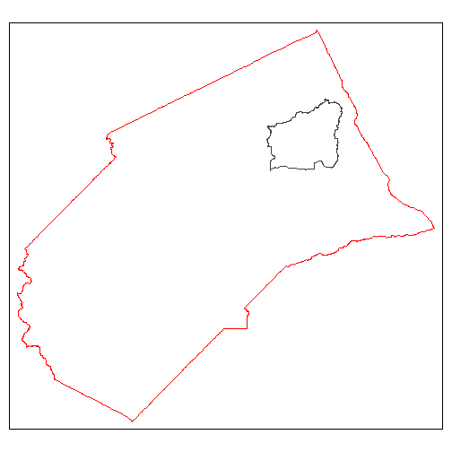
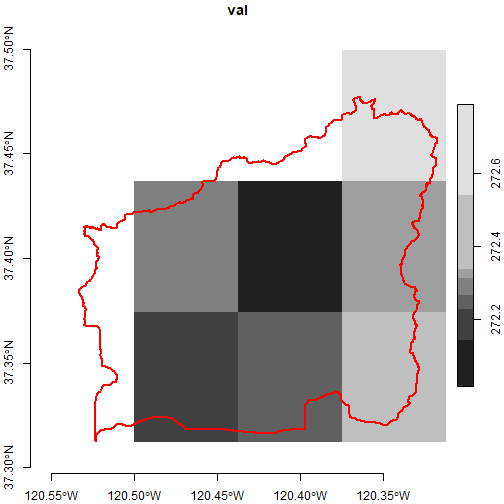
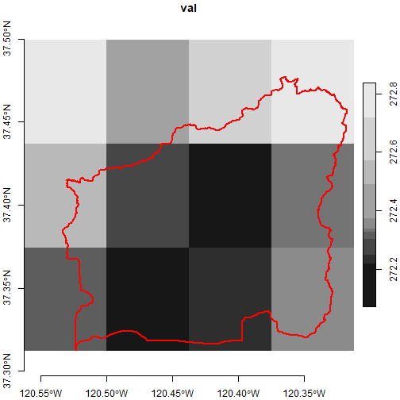

Rasters Part II: Six-Dimensional Climate Data Cubes and Spatial Queries
Source:vignettes/rasters-pt2.Rmd
rasters-pt2.RmdThink of rasters as arrays
The term ‘raster’ is pretty familiar and intuitive to anyone with a little experience with remote sensing or even photography. However to work effectively and efficiently with raster data from Cal-Adapt using the powerful functions from the stars package, you’ll get more mileage if you think of your data in terms of arrays.
Like rasters, arrays are structures for organizing data in multiple dimensions, including regular grids and layers (i.e., bands). Rasters are a kind of array, but arrays are more general and extensible than rasters. For example arrays can have more than 3 dimensions. Below we will convert Cal-Adapt raster data into six dimensional arrays, where the dimensions include x, y, date, gcm, scenario, and climate variable.
You might ask - why would anyone want to work with a 6-dimensional array, instead the more intuitive raster format where the layers represent slices of time? If you only have a single 3D raster to deal with, then yes the standard raster methods and functions would probably suffice. However if you’re dealing with data from climate models, you’re probably going to have to work with many rasters, representing different emission scenarios, GCMs, and climate variables. Quite likely your analysis will also have to apply the same analysis to several rasters, and combine or compare the results.
In the Rasters Part I vignette, we saw
how to work programmatically with individual stars objects saved in a
list, with the assistance of a list ‘index’ created by
ca_stars_index(). But this approach can be klunky. By
combining all your rasters into a high dimensional array, you can write
code which is a lot more concise, consistent, and (eventually)
intuitive. In this vignette, we’ll see how combine all the 3D stars
objects you downloaded from Cal-Adapt into a single six-dimensional
stars object, or climate data cube, and slice and dice the data using
square bracket notation and dplyr verbs for analysis.
Import Merced County raster data
Start by loading the packages we’ll use:
library(caladaptr)
library(dplyr)
library(sf)
library(stars)
library(magrittr)
library(tmap)
library(lubridate)Next, we import the TIF files we downloaded in Rasters Part I.
data_dir <- tools::R_user_dir("caladaptr", which = "data")
merced_dir <- file.path(data_dir, "merced")
merced_tifs_fn <- list.files(merced_dir, pattern = ".tif$", full.names = TRUE)
basename(merced_tifs_fn)
#> [1] "tasmax_day_CanESM2_rcp45_fips-06047.tif" "tasmax_day_CanESM2_rcp85_fips-06047.tif" "tasmax_day_CNRM-CM5_rcp45_fips-06047.tif"
#> [4] "tasmax_day_CNRM-CM5_rcp85_fips-06047.tif" "tasmax_day_HadGEM2-ES_rcp45_fips-06047.tif" "tasmax_day_HadGEM2-ES_rcp85_fips-06047.tif"
#> [7] "tasmax_day_MIROC5_rcp45_fips-06047.tif" "tasmax_day_MIROC5_rcp85_fips-06047.tif" "tasmin_day_CanESM2_rcp45_fips-06047.tif"
#> [10] "tasmin_day_CanESM2_rcp85_fips-06047.tif" "tasmin_day_CNRM-CM5_rcp45_fips-06047.tif" "tasmin_day_CNRM-CM5_rcp85_fips-06047.tif"
#> [13] "tasmin_day_HadGEM2-ES_rcp45_fips-06047.tif" "tasmin_day_HadGEM2-ES_rcp85_fips-06047.tif" "tasmin_day_MIROC5_rcp45_fips-06047.tif"
#> [16] "tasmin_day_MIROC5_rcp85_fips-06047.tif"Import the TIF files as a list of stars objects:
mercd_stars_lst <- ca_stars_read(merced_tifs_fn)
names(mercd_stars_lst)
#> [1] "tasmax_day_CanESM2_rcp45_fips-06047" "tasmax_day_CanESM2_rcp85_fips-06047" "tasmax_day_CNRM-CM5_rcp45_fips-06047"
#> [4] "tasmax_day_CNRM-CM5_rcp85_fips-06047" "tasmax_day_HadGEM2-ES_rcp45_fips-06047" "tasmax_day_HadGEM2-ES_rcp85_fips-06047"
#> [7] "tasmax_day_MIROC5_rcp45_fips-06047" "tasmax_day_MIROC5_rcp85_fips-06047" "tasmin_day_CanESM2_rcp45_fips-06047"
#> [10] "tasmin_day_CanESM2_rcp85_fips-06047" "tasmin_day_CNRM-CM5_rcp45_fips-06047" "tasmin_day_CNRM-CM5_rcp85_fips-06047"
#> [13] "tasmin_day_HadGEM2-ES_rcp45_fips-06047" "tasmin_day_HadGEM2-ES_rcp85_fips-06047" "tasmin_day_MIROC5_rcp45_fips-06047"
#> [16] "tasmin_day_MIROC5_rcp85_fips-06047"Create a 6D data cube
ca_stars_6d() takes a list of 3D stars objects and
returns a 6D stars object. The new dimensions are generated from the
Cal-Adapt metadata that was first saved in sidecar files when you
downloaded the TIF files, and imported along with the TIFs when you ran
ca_stars_read().
There are two important requirements for combining multiple 3D stars objects into one 6D stars object:
The stars objects (TIFs) must all cover for same spatial area.
The climate variables of the individual stars objects must use the same units. For example you can combine tasmin and tasmax into a 6D raster, because their units are both degrees Kelvin. But you can’t combine temperature and precipitation.
Turn the list of 3D stars objects into a 6 stars object:
(mercd_stars_6d <- ca_stars_6d(mercd_stars_lst))
#> stars object with 6 dimensions and 1 attribute
#> attribute(s), summary of first 1e+05 cells:
#> Min. 1st Qu. Median Mean 3rd Qu. Max. NA's
#> val 276.0979 285.4992 287.7837 287.9336 290.1285 299.0094 58748
#> dimension(s):
#> from to offset delta refsys point values x/y
#> x 1 20 -121.2 0.0625 WGS 84 FALSE NULL [x]
#> y 1 16 37.69 -0.0625 WGS 84 FALSE NULL [y]
#> scenario 1 2 NA NA NA NA rcp45, rcp85
#> gcm 1 4 NA NA NA NA CanESM2,...,MIROC5
#> date 1 7670 2045-01-01 1 days Date NA NULL
#> cvar 1 2 NA NA NA NA tasmax, tasminNote the addition of dimensions for scenario,
gcm, and cvar. In this example, these
dimensions have 2 or more values, but even if there was only one value
in the list of stars objects they will still be included in the stars
object returned by ca_stars_6d().
These extra dimensions can be used to subset the stars object. For
example if we just wanted the climate variables for emissions scenario
rcp85, GCM MIROC5, and Jan-March, we could write an expression for
filter():
(mercd_stars_6d %>%
filter(scenario == "rcp85", gcm == "MIROC5", month(date) <= 3))
#> stars object with 6 dimensions and 1 attribute
#> attribute(s), summary of first 1e+05 cells:
#> Min. 1st Qu. Median Mean 3rd Qu. Max. NA's
#> val 278.0172 286.6794 289.8948 290.3535 293.5023 303.4041 58748
#> dimension(s):
#> from to offset delta refsys point values x/y
#> x 1 20 -121.2 0.0625 WGS 84 FALSE NULL [x]
#> y 1 16 37.69 -0.0625 WGS 84 FALSE NULL [y]
#> scenario 1 1 NA NA NA NA rcp85
#> gcm 1 1 NA NA NA NA MIROC5
#> date 1 1895 NA NA Date NA 2045-01-01,...,2065-03-31
#> cvar 1 2 NA NA NA NA tasmax, tasminSubsetting with square brackets
An alternative way of subsetting a stars object is with square brackets, similar to how you can subset matrices or arrays in base R.
The template for subsetting our 6D array looks like:
my_6d_stars_object[spatial object or a attribute, x-indices, y-indices, scenario indices, gcm indices, date indices, cvar-indices]
TIP: Square bracket notation is the only way you can subset rasters that have a single row or single column.
Square bracket notation is common with matrices and data frames in base R, but there are a couple of key differences between subsetting a stars object and a traditional matrix.
The first slot allows you to pass a spatial object, which will be used to perform a spatial query, or the name of an attribute. Hence there will be one extra comma in the square brackets. In this context attribute refers to the attributes of the stars object (i.e., names of the array values), not a vector feature. Our 6D stars object only has one attribute,
val, but stars object are capable of having multiple attributes for each element of the array.The expressions for the dimensions can only accept indices, not logical values or dimension values. Expressions like
cvar == 'MIROC5', that would work fine to subset a regular matrix, won’t work for a stars object. Logical expressions can of course be easily converted to indices usingwhich().Similar to traditional subsetting, if you omit an expression all values for that dimension will be returned. Commas should not be omitted, unless there are no other expressions that follow.
Example 1. Square bracket notation to subet multiple dimensions simultaneously
The following examples demonstrate how to subset with square brackets to get a subset consisting of:
- emissions scenario:
rcp85 - GCM:
CNRM-CM5orMIROC5 - date: winter monthly only (December thru March)
(scen_idx <- mercd_stars_6d %>%
st_get_dimension_values("scenario") %>%
equals("rcp45") %>%
which())
#> [1] 1
(gcm_idx <- mercd_stars_6d %>%
st_get_dimension_values("gcm") %>%
is_in( c("CNRM-CM5", "MIROC5")) %>%
which())
#> [1] 2 4
date_idx <- mercd_stars_6d %>%
st_get_dimension_values("date") %>%
month() %>%
is_in( c(12, 1, 2, 3)) %>%
which()
str(date_idx)
#> int [1:2546] 1 2 3 4 5 6 7 8 9 10 ...
mercd_stars_6d[ , , , scen_idx, gcm_idx, date_idx, ]
#> stars object with 6 dimensions and 1 attribute
#> attribute(s), summary of first 1e+05 cells:
#> Min. 1st Qu. Median Mean 3rd Qu. Max. NA's
#> val 279.2779 285.8354 288.1668 288.8418 291.2101 304.4528 58748
#> dimension(s):
#> from to offset delta refsys point values x/y
#> x 1 20 -121.2 0.0625 WGS 84 FALSE NULL [x]
#> y 1 16 37.69 -0.0625 WGS 84 FALSE NULL [y]
#> scenario 1 1 NA NA NA NA rcp45
#> gcm 1 2 NA NA NA NA CNRM-CM5, MIROC5
#> date 1 2546 NA NA Date NA [2045-01-01,2045-01-02),...,[2065-12-31,2066-01-01)
#> cvar 1 2 NA NA NA NA tasmax, tasminExample 2. Square bracket notation within a loop
If we wanted to aggregate pixel values across time using a function such as accumulated GDD, for all combinations of emissions scenario and GCM, we could use square bracket notation within a loop.
In the following example, a double loop is set up to loop through scenarios followed by GCMs. Cumulative GDD is then computed and saved to a list.
## Get the names for the scenarios and GCM. We will loop through these.
(scen_names <- mercd_stars_6d %>% st_get_dimension_values("scenario"))
#> [1] "rcp45" "rcp85"
(gcm_names <- mercd_stars_6d %>% st_get_dimension_values("gcm"))
#> [1] "CanESM2" "CNRM-CM5" "HadGEM2-ES" "MIROC5"
## Select a range of dates in 2050. If we wanted all years this could also go into a loop.
date_idx <- mercd_stars_6d %>%
st_get_dimension_values("date") %>%
year() %>%
`==`(2050) %>%
which()
## Create a pixel aggregation function that computes the accumulated GDD.
## The argument x will be a 2-column matrix where the rows are dates and
## and the columns are cvars (tasmax and tasmin)
gdd_csum <- function(x, basetemp) {
cumsum( (apply(x - 273, MARGIN = 1, sum) / 2) - basetemp)
}
## Create a blank list to hold the results
gdd_stars_lst <- list()
for (sc_idx in 1:length(scen_names)) {
## Create a first level list for this scenario
gdd_stars_lst[[scen_names[sc_idx]]] <- list()
for (gcm_idx in 1:length(gcm_names)) {
## Add the stars element to the first level list
gdd_stars_lst[[scen_names[sc_idx]]][[gcm_names[gcm_idx]]] <-
mercd_stars_6d[ , , , sc_idx, gcm_idx, date_idx, ] %>%
st_apply(MARGIN = c("x", "y", "scenario", "gcm"),
FUN = gdd_csum, basetemp = 7,
.fname = "my_gdd_csum", single_arg = TRUE) %>%
setNames("gdd_csum")
}
}
sapply(gdd_stars_lst, names)
#> rcp45 rcp85
#> [1,] "CanESM2" "CanESM2"
#> [2,] "CNRM-CM5" "CNRM-CM5"
#> [3,] "HadGEM2-ES" "HadGEM2-ES"
#> [4,] "MIROC5" "MIROC5"Spatial Subsetting
You can spatially subset a stars object by passing a sf object to the
first slot in the square brackets, or by using st_crop().
The two methods are equivalent. sf object must be in the same CRS as the
stars object.
For example suppose we were only interested in the Black Rascal Creek HUC10 watershed, which lies in Merced County:
mercd_bnd_sf <- ca_aoipreset_geom("counties") %>%
filter(fips == "06047") %>%
select(name, state_name, fips) %>%
st_transform(4326)
#> Reading layer `counties' from data source `C:\Users\Andy\AppData\Local\R\cache\R\caladaptr\counties.gpkg' using driver `GPKG'
#> Simple feature collection with 87 features and 54 fields
#> Geometry type: MULTIPOLYGON
#> Dimension: XY
#> Bounding box: xmin: -13871160 ymin: 3833648 xmax: -12625080 ymax: 5416187
#> Projected CRS: WGS 84 / Pseudo-Mercator
black_rascal_creek_sf <- ca_aoipreset_geom("hydrounits") %>%
filter(huc10 == "1804000114") %>%
st_transform(4326)
#> Reading layer `hydrounits' from data source `C:\Users\Andy\AppData\Local\R\cache\R\caladaptr\hydrounits.gpkg' using driver `GPKG'
#> Simple feature collection with 958 features and 15 fields
#> Geometry type: MULTIPOLYGON
#> Dimension: XY
#> Bounding box: xmin: -13863190 ymin: 3808721 xmax: -12735560 ymax: 5186222
#> Projected CRS: WGS 84 / Pseudo-Mercator
tm_shape(mercd_bnd_sf) +
tm_borders(col = "red") +
tm_shape(black_rascal_creek_sf) +
tm_borders()
To subset our 6D stars object with square bracket notation, we simply put a sf object in the first slot:
(mercd_stars_6d[black_rascal_creek_sf, , , , , , ])
#> stars object with 6 dimensions and 1 attribute
#> attribute(s), summary of first 1e+05 cells:
#> Min. 1st Qu. Median Mean 3rd Qu. Max. NA's
#> val 278.0972 292.3456 300.7236 300.3874 308.6533 318.9679 41668
#> dimension(s):
#> from to offset delta refsys point values x/y
#> x 12 15 -121.2 0.0625 WGS 84 FALSE NULL [x]
#> y 4 6 37.69 -0.0625 WGS 84 FALSE NULL [y]
#> scenario 1 2 NA NA NA NA rcp45, rcp85
#> gcm 1 4 NA NA NA NA CanESM2,...,MIROC5
#> date 1 7670 2045-01-01 1 days Date NA NULL
#> cvar 1 2 NA NA NA NA tasmax, tasminTIP: If you pass a sf object in slot 1 of square brakets, the rest of the slots are ignored and the remaining commas can be omitted. Hence you can’t spatially subset a stars object while simultaneously subsetting along dimension(s). Spatial subsetting an dimension subsetting need to be in separate expressions.
Here’s what spatial subsetting looks like with
st_crop():
(brc_stars_6d <- mercd_stars_6d %>% st_crop(black_rascal_creek_sf, crop = TRUE))
#> stars object with 6 dimensions and 1 attribute
#> attribute(s), summary of first 1e+05 cells:
#> Min. 1st Qu. Median Mean 3rd Qu. Max. NA's
#> val 278.0972 292.3456 300.7236 300.3874 308.6533 318.9679 41668
#> dimension(s):
#> from to offset delta refsys point values x/y
#> x 12 15 -121.2 0.0625 WGS 84 FALSE NULL [x]
#> y 4 6 37.69 -0.0625 WGS 84 FALSE NULL [y]
#> scenario 1 2 NA NA NA NA rcp45, rcp85
#> gcm 1 4 NA NA NA NA CanESM2,...,MIROC5
#> date 1 7670 2045-01-01 1 days Date NA NULL
#> cvar 1 2 NA NA NA NA tasmax, tasmincrop = TRUE (the default) tells it to reduce the extent
of cropped object. Alternately it would keep the original number of rows
and columns and set those outside the cropped are to NA.
To verify we can plot the subset area (with additional filters to just get one layer) overlaid by the watershed boundary:
plot(brc_stars_6d %>% filter(scenario == "rcp45", gcm == "MIROC5",
date == as.Date("2050-01-01"), cvar == "tasmin"),
axes = TRUE, reset = FALSE)
plot(black_rascal_creek_sf %>% st_geometry(), border = "red", lwd = 2, add = TRUE)
This plot reflects the intersection rule that st_crop()
applies to the pixels along the edges of the polygon. In order for a
pixel to be counted as part of the intersection, the center needs to be
within the polygon boundary. If you wanted to err on the side of
inclusion, you could crop using the extent of the watershed
boundary:
(brc_bb_stars_6d <- mercd_stars_6d %>%
st_crop(black_rascal_creek_sf %>% st_bbox() %>% st_as_sfc(), crop = TRUE))
#> stars object with 6 dimensions and 1 attribute
#> attribute(s), summary of first 1e+05 cells:
#> Min. 1st Qu. Median Mean 3rd Qu. Max.
#> val 278.0972 292.3031 300.6886 300.3325 308.5641 318.9679
#> dimension(s):
#> from to offset delta refsys point values x/y
#> x 12 15 -121.2 0.0625 WGS 84 FALSE NULL [x]
#> y 4 6 37.69 -0.0625 WGS 84 FALSE NULL [y]
#> scenario 1 2 NA NA NA NA rcp45, rcp85
#> gcm 1 4 NA NA NA NA CanESM2,...,MIROC5
#> date 1 7670 2045-01-01 1 days Date NA NULL
#> cvar 1 2 NA NA NA NA tasmax, tasmin
plot(brc_bb_stars_6d %>% filter(scenario == "rcp45", gcm == "MIROC5",
date == as.Date("2050-01-01"), cvar == "tasmin"),
axes = TRUE, reset = FALSE)
plot(black_rascal_creek_sf %>% st_geometry(), border = "red", lwd = 2, add = TRUE)
Spatial Aggregation
Spatial aggregation combines extracting pixel values for spatial
features with an aggregation function like mean that
collapses the values into a single number for each feature. The output
is a stars vector cube, which is like a sf object however the attribute
table is a multidimensional array.
You can use aggregate()
for spatial aggregations with stars objects. aggregate()
can also be used to aggregate values over time, but you can’t do both in
the same call. When used for spatial aggregation, the inputs into
aggregate() include a stars object and a sf object.
Unlike the more flexible st_apply(), the
aggregate() can only aggregate one attribute (layer) at a
time. In other words, if you need to combine time series data into a
single metric (such as GDD), and also aggregate the results by polygons,
you have to break them into different steps. You can either aggregate
the time data by polygon and then compute GDD metric, or compute the GDD
metric by pixel (using st_apply()) and then aggregate those
by polygon. The choice of order will affect the results.
Compute Accumulated GDD for Merced County Supervisor Districts
To illustrate how temporal and spatial aggregation can be combined,
we’ll compute the projected accumulated GDD for the Merced County Board
of Supervisors Districts for one calendar year, one emissions scenario,
and one GCM. We’ll first compute daily GDD for each pixel, so that we
can take advantage of the fine scale resolution of the data. Next we’ll
use aggregate() to get the mean daily GDD for each
district. Lastly, we’ll go back to st_apply() to generate
the cumulative sum of the mean daily GDD for each district.
Begin by importing the supervisor district boundaaries (source):
mercd_bos_dist_fn <- file.path(merced_dir, "mercd_bos_dist.geojson") %>% normalizePath()
if (!file.exists(mercd_bos_dist_fn)) {
download.file("https://raw.githubusercontent.com/ucanr-igis/caladaptr-res/main/geoms/merced_bos_districts.geojson", mercd_bos_dist_fn, quiet = TRUE)
}
(mercd_bos_dist_sf <- st_read(mercd_bos_dist_fn, quiet = TRUE) %>%
select(districtid))
#> Simple feature collection with 5 features and 1 field
#> Geometry type: MULTIPOLYGON
#> Dimension: XY
#> Bounding box: xmin: -121.2487 ymin: 36.74039 xmax: -120.0521 ymax: 37.63337
#> Geodetic CRS: WGS 84
#> districtid geometry
#> 1 1 MULTIPOLYGON (((-120.5824 3...
#> 2 4 MULTIPOLYGON (((-121.0675 3...
#> 3 5 MULTIPOLYGON (((-120.6155 3...
#> 4 2 MULTIPOLYGON (((-120.5048 3...
#> 5 3 MULTIPOLYGON (((-120.5953 3...
tm_shape(mercd_bos_dist_sf) + tm_fill(col = "districtid")
Next we simplify the task by creating a stars object with daily min / max temp for just one year, one emissions scenario, and GCM:
(mercd_2050_stars <- mercd_stars_6d %>%
filter(scenario == "rcp45", gcm == "MIROC5", year(date) == 2050))
#> stars object with 6 dimensions and 1 attribute
#> attribute(s):
#> Min. 1st Qu. Median Mean 3rd Qu. Max. NA's
#> val 268.8781 282.9231 289.3158 291.674 300.5461 320.2531 137240
#> dimension(s):
#> from to offset delta refsys point values x/y
#> x 1 20 -121.2 0.0625 WGS 84 FALSE NULL [x]
#> y 1 16 37.69 -0.0625 WGS 84 FALSE NULL [y]
#> scenario 1 1 NA NA NA NA rcp45
#> gcm 1 1 NA NA NA NA MIROC5
#> date 1 365 2050-01-01 1 days Date NA NULL
#> cvar 1 2 NA NA NA NA tasmax, tasminNext, compute the daily GDD (see the Rasters Part 1 vignette for details):
gdd_daily_2args <- function(x1, x2, basetemp) {((x1 + x2) / 2) - 273.15 - basetemp}
(mercd_2050_dlygdd_stars <- mercd_2050_stars %>%
st_apply(MARGIN = c("x", "y", "scenario", "gcm", "date"),
FUN = gdd_daily_2args, basetemp = 7,
.fname = "dly_gdd", single_arg = FALSE))
#> stars object with 5 dimensions and 1 attribute
#> attribute(s):
#> Min. 1st Qu. Median Mean 3rd Qu. Max. NA's
#> dly_gdd -6.116125 5.6051 11.43466 11.52398 17.02358 27.52923 68620
#> dimension(s):
#> from to offset delta refsys point values x/y
#> x 1 20 -121.2 0.0625 WGS 84 FALSE NULL [x]
#> y 1 16 37.69 -0.0625 WGS 84 FALSE NULL [y]
#> scenario 1 1 NA NA NA NA rcp45
#> gcm 1 1 NA NA NA NA MIROC5
#> date 1 365 2050-01-01 1 days Date NA NULLNow we’re ready to use aggregate() to get the average
daily GDD for each Supervisor district. We are averaging across the
polygons, but the daily values (i.e., time dimension) are still kept
separate because we’re going to need to create the cumulative sum in the
final step.
(bod_2050_dlygdd_stars <- mercd_2050_dlygdd_stars %>%
aggregate(by = mercd_bos_dist_sf, FUN = mean))
#> stars object with 4 dimensions and 1 attribute
#> attribute(s):
#> Min. 1st Qu. Median Mean 3rd Qu. Max.
#> dly_gdd -2.937308 5.640863 11.66823 11.71801 17.26827 26.58949
#> dimension(s):
#> from to offset delta refsys point values
#> geometry 1 5 NA NA WGS 84 FALSE MULTIPOLYGON (((-120.5824...,...,MULTIPOLYGON (((-120.5953...
#> scenario 1 1 NA NA NA NA rcp45
#> gcm 1 1 NA NA NA NA MIROC5
#> date 1 365 2050-01-01 1 days Date NA NULLWe now have 365 daily GDD values for each of 5 poglyons. Our last step is to create the cumulative sum:
bod_2050_csumgdd_stars <- bod_2050_dlygdd_stars %>%
st_apply(MARGIN = c("geometry", "scenario", "gcm"),
FUN = cumsum, .fname = "date") %>%
aperm(c(2,3,4,1)) %>%
setNames("csum_gdd")
## Copy the properties of the 'date' dimension
st_dimensions(bod_2050_csumgdd_stars)["date"] <- st_dimensions(bod_2050_dlygdd_stars)["date"]
bod_2050_csumgdd_stars
#> stars object with 4 dimensions and 1 attribute
#> attribute(s):
#> Min. 1st Qu. Median Mean 3rd Qu. Max.
#> csum_gdd -0.6124481 443.5684 1775.67 1990.72 3553.634 4376.372
#> dimension(s):
#> from to offset delta refsys point values
#> geometry 1 5 NA NA WGS 84 FALSE MULTIPOLYGON (((-120.5824...,...,MULTIPOLYGON (((-120.5953...
#> scenario 1 1 NA NA NA NA rcp45
#> gcm 1 1 NA NA NA NA MIROC5
#> date 1 365 2050-01-01 1 days Date NA NULLPlot the accumulated curves (one curve for each Supervisor District):
gdd_csum_df <- bod_2050_csumgdd_stars[, , , , drop=TRUE] %>%
pull(1) %>%
t() %>%
as.data.frame() %>%
setNames(c("Dist1", "Dist2", "Dist3", "Dist4", "Dist5"))
matplot(x = 1:nrow(gdd_csum_df), y = gdd_csum_df, type="l", lty = 1)
Plot the accumulated GDD per Supervisor district as of Sept 30, 2050.
plot(bod_2050_csumgdd_stars %>% filter(date == as.Date("2050-09-30")),
main = "Accumulated GDD: Jan 1 - Sept 30, 2050")